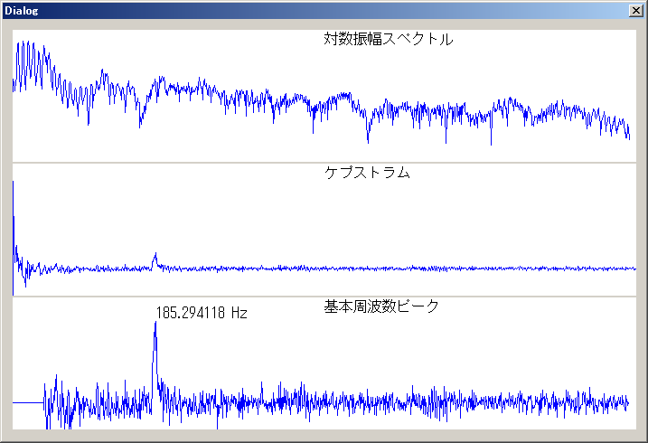
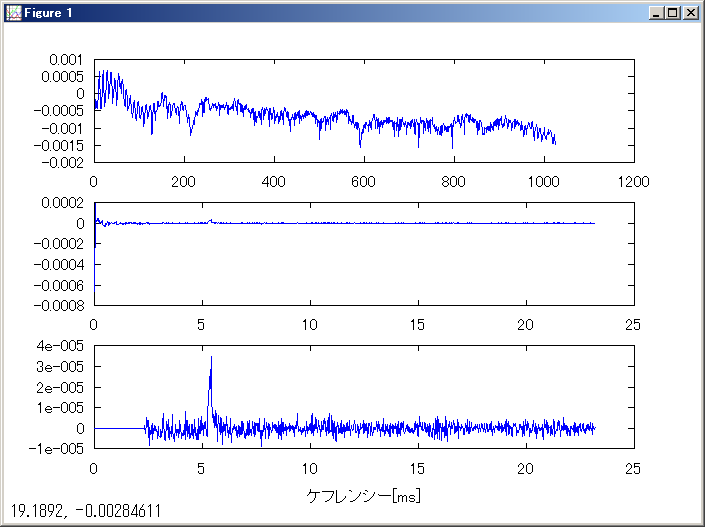
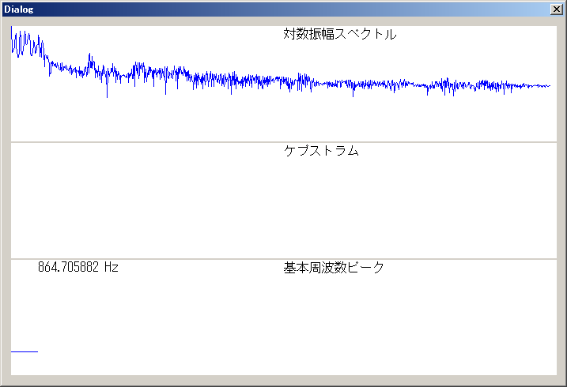
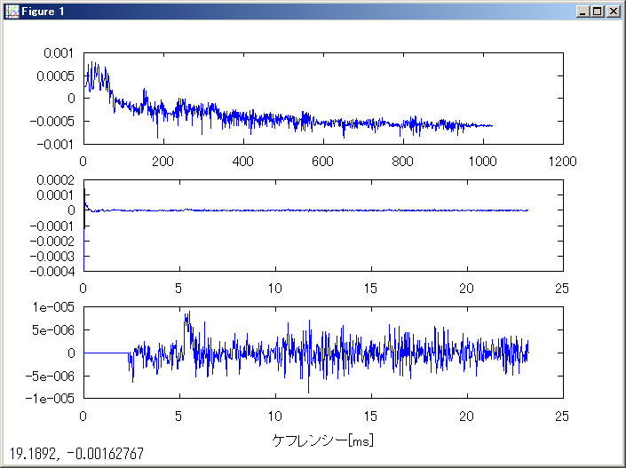

更新日時：2010/5/3
C/C++言語でケプストラム法により基本周波数解析を行うサンプルプログラムです。ここで公開されているMATLABのサンプルソースを元にしています。
解析対象の音声ファイルは、同サイトで公開されているa.wavを使用しました。
サンプルのため、対応しているwavファイルのフォーマットは、チャンネル数がモノラルで、ビット／サンプルが32bitのみです。
また、FFTのソースは、ここのソースを使用しています。
実行結果は、下図のようになります。

実行結果
MATLAB(Octave)の実行結果と比較して、ほぼ同じ結果になっています。なお、筆者はMATLABを持っていないのでMATLAB互換のフリーソフトであるOctaveを使用しました。

MATLAB(Octave)の実行結果
基本周波数：185.29 Hz
ケプストラム解析を行う際、窓関数を使用しないと正しい結果が得られませんでした。対数振幅スペクトルの逆フーリエ変換の結果がすべて不定(-1.#IND00e+000)となってしまいました。窓関数の適用は重要なようです。

窓関数なしの実行結果
MATLAB(Octave)では、結果は表示されますが、きれいなピークになりません。

MATLAB(Octave)での窓関数なしの実行結果
基本周波数：181.48 Hz
HANDLE hFile = CreateFile(L"a.wav", GENERIC_READ, FILE_SHARE_READ, NULL, OPEN_EXISTING, 0, NULL);
RiffHeader header;
DWORD readsize;
ReadFile(hFile, &header, sizeof(header), &readsize, NULL);
FormatChunk fmt;
ReadFile(hFile, &fmt, sizeof(fmt), &readsize, NULL);
int Fs = fmt.dwSamplesPerSec;
DataChunk data;
ReadFile(hFile, &data, sizeof(data), &readsize, NULL);
DWORD wav_length = data.chunkSize/sizeof(float);
float *wav = new float[wav_length];
ReadFile(hFile, wav, data.chunkSize, &readsize, NULL);
int center = wav_length/2; // 中心のサンプル番号
double cuttime = 0.046440; // 切り出す長さ[s]
int wavdata_length = int(cuttime/2*Fs)*2;
TRACE(L"%d wavdata length\n", wavdata_length);
double *wavdata = new double[fftsize];
float *p_wav = wav + center - wavdata_length/2 - 1;
for (int i = 0; i < fftsize; ++i, ++p_wav)
{
// ハニング窓
wavdata[i] = han_window(i, wavdata_length) * double(*p_wav);
}
rdft(fftsize, 1, wavdata, ip, w); // 離散フーリエ変換
double Adft_log[fftsize/2+1]; // 対数振幅スペクトル
Adft_log[0] = log10(wavdata[0]) / fftsize;
Adft_log[fftsize/2] = log10(wavdata[1]) / fftsize;
TRACE(L"%f\t%f\t%e\n", wavdata[0], 0.0, Adft_log[0]);
for (int i = 1; i < fftsize/2; ++i)
{
Adft_log[i] = log10(power(wavdata[i*2], wavdata[i*2+1])) / fftsize;
}
// 逆フーリエ変換
double *cps = new double [fftsize];
for (int i = 0; i < fftsize/2; ++i)
{
cps[i*2] = Adft_log[i];
cps[i*2+1] = 0.0;
}
cps[1] = Adft_log[fftsize/2];
rdft(fftsize, -1, cps, ip, w); // 離散フーリエ変換
// 基本周波数ピーク抽出
int low_cut_num = fftsize/2/20;
int max_n = find_max(cps + low_cut_num, fftsize/2 - low_cut_num) + low_cut_num;
// 基本周波数に変換
double peakQuefrency = 1.0 / Fs * max_n;
double f0 = 1.0 / peakQuefrency;
TRACE(L"%f Hz\n", f0);